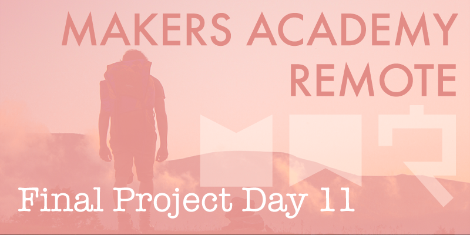
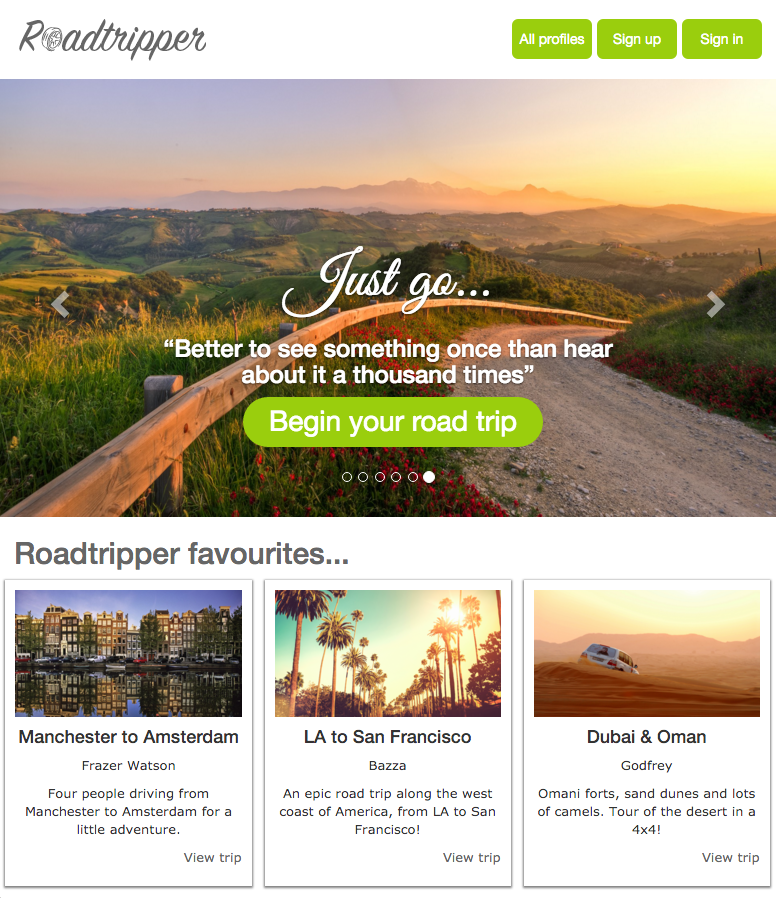

Today we really felt the pressure of graduation day, due to the fact that our live presentations are scheduled to take place tomorrow.
For much of the day today the three of us have worked individually to complete several smaller task quickly. While working separately has allowed for us to be very productive, the continual code updates brought with them a fair share of merge conflicts to be resolved, something that hasn't caused our group too much trouble until today.
Front end inconsistencies
At the start of today the MVP functionality of our site was already in place and our test coverage was high at around 94%, so the main outstanding feature to implement was the front end. Today we've managed to turn the front end in to a fairly faithful recreation of our mockups, much to our relief, however we did come across an odd issue that we haven't managed to find a satisfactory solution for. The front end was developed on my machine, and looked exactly how we intended it to. However when one of my group mates pulled the same code to run it locally the site looked a complete mess, and didn't render anything like it did on my own machine. The site looked great on my machine and terrible on another! We tried the code on the third group member's machine and it looked different again, still not right, but less broken.
All three of us were running Google Chrome on OS X, so I have no idea why it displayed so differently on each machine, I suspect something to do with the responsive nature of bootstrap (and my lack of understanding of it) may have played a part, but we did all ensure our browsers were sized similarly. With little time to understand the cause of the problem, the best use of our time was to push the new front end code to Heroku, which somehow displayed it differently again (leading us to suspect that the problem was caused by more than just browser differences), and tailored the HTML and CSS to display perfectly on that platform, which would serve as the basis for our presentation tomorrow.

Roadtripper, up and running on Heroku.
We certainly want to get our site to the point where it's consistent across machines, but for now getting Roadtripper ready for its public demonstration has been the priority.